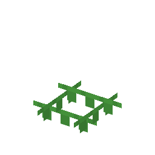

①子ども 豆の根には、空気の中の窒素を肥料に変える菌がいて、畑がやせにくい。
②学生 草をこわすと、ときどき出る（豆＝種）。耕地に植えて熟すと、下の耕地が「窒素の多い耕地」になる。そこに次に植えた麦などは速く育つ（3回まで）。豆なしの耕地と並べて比べてみよう。
③大人 エンドウやレンズ豆などマメ科の根には、こぶ（根粒）がある。中にすむ根粒菌が、空気の約8割をしめる窒素 N2 をアンモニア NH3 に変えて、植物にわたす（窒素固定）。植物はそのかわりに糖を菌にあげる。豆はレンズ豆とともに、麦と同じころ肥沃な三日月地帯で育てられはじめた。
④ガチ 1886年、ドイツのヘルリーゲルとヴィルファルトが、マメ科は根粒があるときだけ空気の窒素を使えることを実験で示した。メンデルが遺伝の法則を見つけたのも、エンドウを8年かけて交配した実験から（1865年発表）。
（作り方のレシピは無い：拾う・掘る・ほかの方法）
（このアイテムを使うレシピは無い）